Section 3.8 Geometry of Lines
The equations of horizontal and vertical lines are special and distinguished from the equations other lines. Also, pairs of lines that are parallel or perpendicular to each other have interesting features and properties. This section examines all these geometric features of lines.
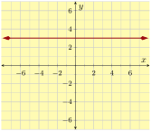
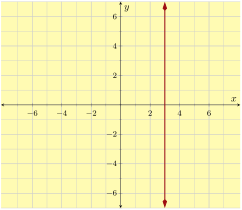
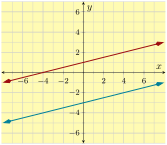
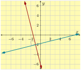
Subsection 3.8.1 Horizontal Lines and Vertical Lines
We learned in Section 7 that all lines can be written in standard form. When either \(A\) or \(B\) equal \(0\text{,}\) we end up with a horizontal or vertical line. Let’s take the standard form line equation, \(Ax+By=C\text{,}\) and one at a time let \(A=0\) and \(B=0\) and simplify each equation.
\begin{align*}
Ax+By\amp=C\amp Ax+By\amp=C\\
\substitute{0}x+By\amp=C\amp Ax+\substitute{0}y\amp=C\\
By\amp=C\amp Ax\amp=C\\
y\amp=\divideunder{C}{B}\amp x\amp=\divideunder{C}{A}\\
y\amp=k\amp x\amp=h
\end{align*}
At the end we just renamed the constant numbers \(\frac{C}{B}\) and \(\frac{C}{A}\) to \(k\) and \(h\) because of tradition. What is important, is that you view \(h\) and \(k\) (as well as \(A\text{,}\) \(B\text{,}\) and \(C\)) as constants: numbers that have some specific value and don’t change.
Think about one of these equations: \(y=k\text{.}\) It says that the \(y\)-value is the same no matter where you are on the line. If you wanted to plot points on this line, you are free to move to the left or to the right on the \(x\)-axis, but then you always move up (or down) by the same amount to make the \(y\)-value reach \(k\text{.}\) What does such a line look like?
Example 3.8.6.
Let’s plot the line with equation \(y=3\text{.}\) To plot some points, it doesn’t matter what \(x\)-values we use. All that matters is that \(y\) is always \(3\text{.}\)
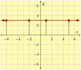
A line like the one in Figure 7 is horizontal. It is parallel to the horizontal axis. All the \(y\)-values of points on a horizontal line are the same. All lines with an equation in the form \(y=k\) are horizontal lines.
Example 3.8.8.
Let’s plot the line with equation \(x=5\text{.}\) Points on the line always have \(x=5\text{,}\) so to make a graph, we must move right to \(5\) on the \(x\)-axis. From there, it does not matter if we move up or down, we would still be at a place where \(x=5\text{.}\)
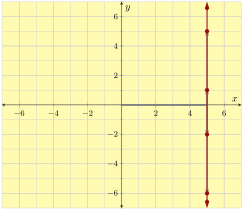
A line like this is vertical, parallel to the vertical axis. All lines with an equation in the form \(x=h\) (or, in standard form, \(Ax+0y=C\)) are vertical.
A line like the one in Figure 9 is vertical. It is parallel to the vertical axis. All the \(y\)-values of points on a vertical line are the same. All lines with an equation in the form \(x=h\) are vertical lines.
Example 3.8.10. Zero Slope.
In Checkpoint 3.4.18, we learned that a horizontal line’s slope is \(0\text{,}\) because the \(y\)-values don’t change as time moves on. So the numerator in the slope formula is \(0\text{.}\) Now, if we know a line’s slope and its \(y\)-intercept, we can use slope-intercept form to write its equation:
\begin{align*}
y\amp=mx+b\\
y\amp=0x+b\\
y\amp=b
\end{align*}
This gives us an alternative way to think about equations of horizontal lines. They have a certain \(y\)-intercept \(b\text{,}\) and they have slope \(0\text{.}\)
We use horizontal lines to model scenarios where there is no change in \(y\)-values, like when Kato stopped for \(12\) hours (he deserved a rest)!
Checkpoint 3.8.11. Plotting Points.
Suppose you need to plot the equation \(y=-4.25\text{.}\) Since the equation is in “\(y=\)” form, you decide to make a table of points. Fill out some points for this table.
| \(x\) | \(y\) |
Explanation.
We can use whatever values for \(x\) that we like, as long as they are all different. The equation tells us the \(y\)-value has to be \(-4.25\) each time.
| \(x\) | \(y\) |
| \(-2\) | \(-4.25\) |
| \(-1\) | \(-4.25\) |
| \(0\) | \(-4.25\) |
| \(1\) | \(-4.25\) |
| \(2\) | \(-4.25\) |
Now that we have a table, we could use its values to assist with plotting the line.
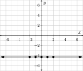
Example 3.8.12. Slope of a Vertical Line.
What is the slope of a vertical line? Figure 13 shows three lines passing through the origin, each steeper than the last. In each graph, you can see a slope triangle that uses a “run” of \(1\) unit.
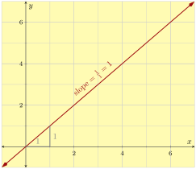
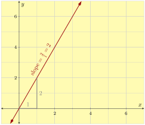
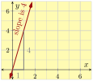
If we continued making the line steeper and steeper until it was vertical, the slope triangle would still have a “run” of \(1\text{,}\) but the “rise” would become larger and larger with no upper limit. The slope would be \(m=\frac{\text{very large}}{1}\text{.}\) Actually if the line is vertical, the “rise” segment we’ve drawn will never make contact with the line. So there won’t be any “rise” to correspond with that “run”. We usually say that the slope of a vertical line is undefined. You can also say that a vertical line “has no slope”.
Fact 3.8.14.
The slope of a vertical line is undefined.
Remark 3.8.15.
Be careful not to mix up “no slope” (which means “its slope is undefined”) with “has slope \(0\)”. If a line has slope \(0\text{,}\) it does have a slope.
In sports, some players wear number \(0\text{.}\) That’s not the same thing as not having a number. This is similar to the situation where having slope \(0\) means you do have a slope, and is different from not having a slope.
Checkpoint 3.8.16. Plotting Points.
Suppose you need to plot the equation \(x=3.14\text{.}\) You decide to try making a table of points. Fill out some points for this table.
| \(x\) | \(y\) |
Explanation.
Since the equation says \(x\) is always the number \(3.14\text{,}\) we have to use this for the \(x\) value in all the points. This is different from how we would plot a “\(y=\)” equation, where we would use several different \(x\)-values. We can use whatever values for \(y\) that we like, as long as they are all different.
| \(x\) | \(y\) |
| \(3.14\) | \(-2\) |
| \(3.14\) | \(-1\) |
| \(3.14\) | \(0\) |
| \(3.14\) | \(1\) |
| \(3.14\) | \(2\) |
The reason we made a table was to help with plotting the line.
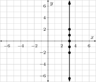
Example 3.8.17.
Let \(x\) represent the price of a new \(60\)-inch television at Target on Black Friday (which was \(\$650\)), and let \(y\) be the number of hours you will watch something on this TV over its lifetime. What is the relationship between \(x\) and \(y\text{?}\)
Well, there is no getting around the fact that \(x=650\text{.}\) As for \(y\text{,}\) without any extra information about your viewing habits, it could theoretically be as low as \(0\) or it could be anything larger than that. If we graph this scenario, we have to graph the equation \(x=650\) which we now know to give a vertical line, and we get Figure 18.
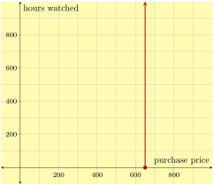
| Horizontal Lines | Vertical Lines |
|---|---|
A line is horizontal if and only if its equation can be written
\begin{equation*}
y=k
\end{equation*}
for some constant \(k\text{.}\)
|
A line is vertical if and only if its equation can be written
\begin{equation*}
x=h
\end{equation*}
for some constant \(h\text{.}\)
|
If the line with equation \(y=k\) is horizontal, it has a \(y\)-intercept at \((0,k)\) and has slope \(0\text{.}\)
|
If the line with equation \(x=h\) is vertical, it has an \(x\)-intercept at \((h,0)\) and its slope is undefined. Some say it has no slope, and some say the slope is infinitely large. |
In the slope-intercept form, any line with equation
\begin{equation*}
y=0x+b
\end{equation*}
is horizontal.
|
It’s impossible to write the equation of a vertical line in slope-intercept form, because vertical lines do not have a defined slope. |
Subsection 3.8.2 Parallel Lines
What makes two lines parallel?
Example 3.8.20.
Two trees were planted in the same year, and their growth over time is modeled by the two lines in Figure 21. Use linear equations to model each tree’s growth, and interpret their meanings in this context.
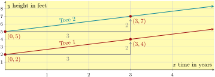
We can see Tree 1’s equation is \(y=\frac{2}{3}x+2\text{,}\) and Tree 2’s equation is \(y=\frac{2}{3}x+5\text{.}\) Both trees have been growing at the same rate, \(\frac{2}{3}\) feet per year, or \(2\) feet every \(3\) years. The two lines have the same slope \(\frac{2}{3}\text{.}\) No matter which line we look at, moving rightward \(3\) units causes us to move upward \(2\) units, and so the two lines will never meet. They are parallel.
Fact 3.8.22.
For any two non-vertical lines, they are parallel if and only if they have the same slope. (And any two vertical lines are parallel to each other.)
Checkpoint 3.8.23.
A line \(\ell\) is parallel to the line with equation \(y=17.2x-340.9\text{,}\) but \(\ell\) has \(y\)-intercept at \((0,128.2)\text{.}\) What is an equation for \(\ell\text{?}\)
Explanation.
Parallel lines have the same slope, and the slope of \(y=17.2x-340.9\) is \(17.2\text{.}\) So \(\ell\) has slope \(17.2\text{.}\) And we have been given that \(\ell\)’s \(y\)-intercept is at \((0,128.2)\text{.}\) So we can use slope-intercept form to write its equation as
\begin{equation*}
y=17.2x+128.2
\text{.}
\end{equation*}
Checkpoint 3.8.24.
A line \(\kappa\) is parallel to the line with equation \(y=-3.5x+17\text{,}\) but \(\kappa\) passes through the point \((-12,23)\text{.}\) What is an equation for \(\kappa\text{?}\)
Explanation.
Parallel lines have the same slope, and the slope of \(y=-3.5x+17\) is \(-3.5\text{.}\) So \(\kappa\) has slope \(-3.5\text{.}\) And we know a point that \(\kappa\) passes through, so we can use point-slope form to write its equation as
\begin{equation*}
y=-3.5(x+12)+23
\text{.}
\end{equation*}
Subsection 3.8.3 Perpendicular Lines
The slopes of two perpendicular lines have a special relationship too. Figure 25 walks you through an explanation of this relationship.
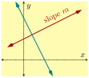
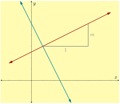
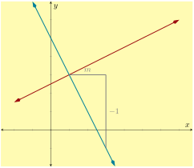
When the first line in Figure 25 has slope \(m\text{,}\) the second has slope
\begin{equation*}
\frac{\Delta y}{\Delta x}=\frac{-1}{m}=-\frac{1}{m}\text{.}
\end{equation*}
Fact 3.8.26.
For two lines that are neither vertical nor horizontal, they are perpendicular to each other if and only if the slope of one is the negative reciprocal of the slope of the other. That is, if one has slope \(m\text{,}\) the other has slope \(-\frac{1}{m}\text{.}\) (And a vertical line and a horizontal line are always perpendicular to each other.)
Another way to say this is that the product of the slopes of two perpendicular lines is \(-1\) (assuming both of the lines have a slope in the first place). That is, if there are two perpendicular lines and we let \(m_1\) and \(m_2\) represent their slopes, then \(m_1\cdot m_2=-1\text{.}\)
Here are three pairs of perpendicular lines where we can see if the pattern holds.
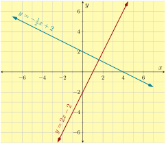
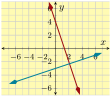
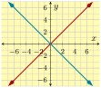
Example 3.8.30.
Line \(A\) passes through \((-2,10)\) and \((3,-10)\text{.}\) Line \(B\) passes through \((-4,-4)\) and \((8,-1)\text{.}\) Determine whether these two lines are parallel, perpendicular or neither.
Explanation.
We will use the slope formula to find both lines’ slopes:
\begin{align*}
\text{Line }A\text{'s slope}\amp=\frac{y_2-y_1}{x_2-x_1}\amp\text{Line }B\text{'s slope}\amp=\frac{y_2-y_1}{x_2-x_1}\\
\amp=\frac{-10-10}{3-(-2)}\amp\amp=\frac{-1-(-4)}{8-(-4)}\\
\amp=\frac{-20}{5}\amp\amp=\frac{3}{12}\\
\amp=-4\amp\amp=\frac{1}{4}
\end{align*}
Their slopes are not the same, so those two lines are not parallel.
The product of their slopes is \((-4)\cdot\frac{1}{4}=-1\text{,}\) which means the two lines are perpendicular.
Checkpoint 3.8.31.
Line \(A\) and Line \(B\) are perpendicular. Line \(A\)’s equation is \(2x+3y=12\text{.}\) Line \(B\) passes through the point \((4,-3)\text{.}\) Find an equation for Line \(B\text{.}\)
Explanation.
First, we will find Line \(A\)’s slope by rewriting its equation from standard form to slope-intercept form:
\begin{equation*}
\begin{aligned}
2x+3y\amp=12\\
3y\amp=12\subtractright{2x}\\
3y\amp=-2x+12\\
y\amp=\divideunder{-2x+12}{3}\\
y\amp=-\frac{2}{3}x+4
\end{aligned}
\end{equation*}
So Line \(A\)’s slope is \(-\frac{2}{3}\text{.}\) Since Line \(B\) is perpendicular to Line \(A\text{,}\) its slope is the negative reciprocal, \(\frac{3}{2}\text{.}\) It’s also given that Line \(B\) passes through \((4,-3)\text{,}\) so we can write Line \(B\)’s point-slope form equation:
\begin{equation*}
\begin{aligned}
y\amp=m(x-x_0)+y_0\\
y\amp=\frac{3}{2}(x-4)-3
\end{aligned}
\end{equation*}
Reading Questions 3.8.4 Reading Questions
1.
Explain the difference between a line that has no slope and a line that has slope \(0\text{.}\)
2.
If you make a table of \(x\)- and \(y\)-values for a horizontal line what special thing will happen in one of the two columns?
3.
If you know two points on one line, and you know two points on a second line, what could you do to determine whether or not the two lines are perpendicular?
Exercises 3.8.5 Exercises
Review and Warmup
Point-Slope Given Two Points.
A line passes through two given points. Find an equation for the line in point-slope form using one of the given points.
1.
\({\left(7,6\right)}\) and \({\left(3,-26\right)}\)
2.
\({\left(-4,-6\right)}\) and \({\left(9,-110\right)}\)
3.
\({\left(-9,-8\right)}\) and \({\left(19,-28\right)}\)
4.
\({\left(-7,4\right)}\) and \({\left(-12,3\right)}\)
Testing Points as Solutions.
Which of the ordered pairs are solutions to the given equation? There may be more than one correct answer.
5.
\(y={-5}\)
- \(\displaystyle \left(-1,-5\right)\)
- \(\displaystyle \left(-5,-2\right)\)
- \(\displaystyle \left(-3,-4\right)\)
- \(\displaystyle \left(0,-5\right)\)
6.
\(y={-3}\)
- \(\displaystyle \left(4,-3\right)\)
- \(\displaystyle \left(3,-3\right)\)
- \(\displaystyle \left(2,-8\right)\)
- \(\displaystyle \left(-3,-3\right)\)
7.
\(x=3\)
- \(\displaystyle \left(0,-3\right)\)
- \(\displaystyle \left(3,1\right)\)
- \(\displaystyle \left(2,3\right)\)
- \(\displaystyle \left(3,-2\right)\)
8.
\(x=2\)
- \(\displaystyle \left(2,2\right)\)
- \(\displaystyle \left(-3,2\right)\)
- \(\displaystyle \left(-3,-1\right)\)
- \(\displaystyle \left(2,-2\right)\)
Skills Practice
Tables for Horizontal and Vertical Lines.
Make a table for the equation, and then plot it.
9.
\(x=4\)
| \(x\) | \(y\) | Point |
10.
\(x=6\)
| \(x\) | \(y\) | Point |
11.
\(y=8\)
| \(x\) | \(y\) | Point |
12.
\(y=-9\)
| \(x\) | \(y\) | Point |
Identify the Line Equation.
Write an equation for the given line.
13.
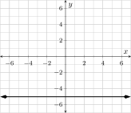
14.
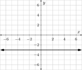
15.
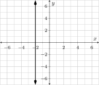
16.
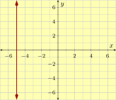
17.
The line that passes through \({\left(2,-6\right)}\) and \({\left(2,0\right)}\text{.}\)
18.
The line that passes through \({\left(4,6\right)}\) and \({\left(4,8\right)}\text{.}\)
19.
The line that passes through \({\left(-1,6\right)}\) and \({\left(-4,6\right)}\text{.}\)
20.
The line that passes through \({\left(-7,8\right)}\) and \({\left(5,8\right)}\text{.}\)
Intercepts.
Find the \(x\)- and \(y\)-intercepts of each line.
21.
\(y=-9\)
22.
\(y=-7\)
23.
\(x=-5\)
24.
\(x=-3\)
Parallel or Perpendicular.
Determine if the two lines are the same line, distinct parallel lines, perpendicular lines, or none of the above.
25.
Line \(\ell_1\) contains the points \({\left(-1,6\right)}\) and \({\left(-3,2\right)}\text{.}\) Line \(\ell_2\) contains the points \({\left(9,0\right)}\) and \({\left(11,4\right)}\text{.}\)
26.
Line \(\ell_1\) contains the points \({\left(1,-5\right)}\) and \({\left(-9,-2\right)}\text{.}\) Line \(\ell_2\) contains the points \({\left(8,9\right)}\) and \({\left(38,0\right)}\text{.}\)
27.
Line \(\ell_1\) contains the points \({\left(4,3\right)}\) and \({\left(3,-8\right)}\text{.}\) Line \(\ell_2\) contains the points \({\left(8,0\right)}\) and \({\left(-25,3\right)}\text{.}\)
28.
Line \(\ell_1\) contains the points \({\left(6,-8\right)}\) and \({\left(-3,6\right)}\text{.}\) Line \(\ell_2\) contains the points \({\left(8,9\right)}\) and \({\left(-34,-18\right)}\text{.}\)
29.
Line \(\ell_1\) contains the points \({\left(8,0\right)}\) and \({\left(9,1\right)}\text{.}\) Line \(\ell_2\) contains the points \({\left(-7,-5\right)}\) and \({\left(6,-7\right)}\text{.}\)
30.
Line \(\ell_1\) contains the points \({\left(-9,8\right)}\) and \({\left(3,-5\right)}\text{.}\) Line \(\ell_2\) contains the points \({\left(7,-4\right)}\) and \({\left(9,8\right)}\text{.}\)
31.
Line \(\ell_1\) contains the points \({\left(-7,-3\right)}\) and \({\left(-3,9\right)}\text{.}\) Line \(\ell_2\) contains the points \({\left(-4,6\right)}\) and \({\left(-1,15\right)}\text{.}\)
32.
Line \(\ell_1\) contains the points \({\left(-5,5\right)}\) and \({\left(9,3\right)}\text{.}\) Line \(\ell_2\) contains the points \({\left(16,2\right)}\) and \({\left(30,0\right)}\text{.}\)
Constructing Parallel and Perpendicular Lines.
Write an equation for the line that is described. Then plot that line.
33.
A line is parallel to the line passing through \({\left(-2,-4\right)}\) and \({\left(2,-1\right)}\text{,}\) and passes through \({\left(7,-1\right)}\text{.}\)
34.
A line is parallel to the line passing through \({\left(0,1\right)}\) and \({\left(-3,-4\right)}\text{,}\) and passes through \({\left(6,9\right)}\text{.}\)
35.
A line is perpendicular to the line passing through \({\left(1,-5\right)}\) and \({\left(5,4\right)}\text{,}\) and passes through \({\left(6,-1\right)}\text{.}\)
36.
A line is perpendicular to the line passing through \({\left(2,-1\right)}\) and \({\left(0,1\right)}\text{,}\) and passes through \({\left(6,9\right)}\text{.}\)
37.
A line is perpendicular to the line passing through \({\left(6,6\right)}\) and \({\left(-6,6\right)}\text{,}\) and passes through \({\left(7,8\right)}\text{.}\)
38.
A line is perpendicular to the line passing through \({\left(8,5\right)}\) and \({\left(6,5\right)}\text{,}\) and passes through \({\left(-5,-9\right)}\text{.}\)
39.
A line is parallel to the line passing through \({\left(-9,5\right)}\) and \({\left(1,5\right)}\text{,}\) and passes through \({\left(4,-8\right)}\text{.}\)
40.
A line is parallel to the line passing through \({\left(-7,5\right)}\) and \({\left(-5,5\right)}\text{,}\) and passes through \({\left(-8,-6\right)}\text{.}\)
Challenge
41.
Prove that a triangle with vertices at the points \((1, 1)\text{,}\) \((-4, 4)\text{,}\) and \((-3, 0)\) is a right triangle.